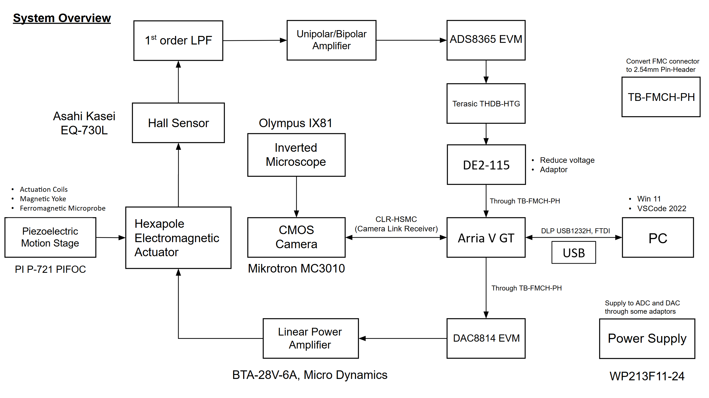

Mechanical Engineering Intern
Logitech
@Hsinchu, Taiwan | March 2025 – June 2025
- Applied the design thinking framework to design and prototype an innovative gaming peripheral.
- Developed 3D mechanical designs in PTC Creo and implemented PID-based control on Arduino Nano ESP32.
- Performed reliability testing and finalized a production-ready prototype with supporting technical documentation.
Research Assistant
Control & Micromanipulation Lab, NTHU, led by Prof. Chia-Hsiang Menq
@Hsinchu, Taiwan | Feburary 2025 – Present
- Assisted in developing magnetic detection for 3D scanning probe microscopy of live cells.
- Focused on hardware implementation, including ADC/DAC integration and FPGA-based control algorithm debugging.

Teaching Assistant
Control System I (PME 320701) under Prof. Cheng-Hsien Liu
@Hsinchu, Taiwan | September 2024 – December 2024
- Review control system concepts and solve problems for the students.